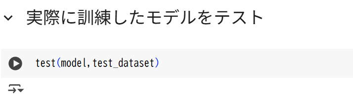
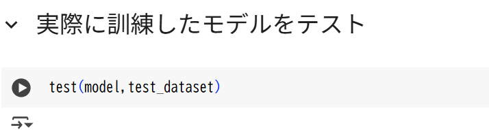

AIを開発する全体の流れを把握してもらい、また、実際に自分の手でAIを訓練する経験をしてもらいたい
とりあえず、AIの中身はブラックボックスとします。その中身は今後学ぶことにします。
AIはこのような図であらわされます
まず、最初このAIモデルはランダムな数値で初期化されます。つまり、間違った答えをいうのです。 そこで、AIにたくさんのデータを見せてあげます。 この画像は猫、これは犬、これは車、これは人間、などと教えてあげます。 これをたくさん繰り返すと、AIは少しずつ、正しい答えを言えるようになります。
実際の学習には高性能なパソコンが必要です。そこで、インターネット上のコンピュータを使って、そこでAIを訓練します。
今回はGoogleが提供しているColabというサービスを使います。 これは、ブラウザ(Chromeとか)の中で、Pythonというプログラミング言語を実行することができます。GPUも無料で使えたりで、AIの訓練に最適です。
私が今回テンプレートを用意しました。そのテンプレートはまだ未完成なので、続きを皆さんに書いていただきたいです。
そのテンプレートはこちらからアクセスできます： Colabテンプレート
これをGoogleドライブに保存します。Googleドライブとは、グーグルのでっかいサーバーの中にデータを保存できるサービスです。
「Ctrl+S」を同時に押すと、こんなウィンドウが出ます。

「ドライブにコピーを保存」を選択して
ログイン.. してきてください。
(※学校のGoogleアカウントでも良いと思うよ)
そして、もう一度もとのページに戻ったらOK
今開いてあるページは、Colabのノートブックと呼ばれるものです。 ノートブックは、Pythonのコードを実行したり、文章を書いたりすることができるものです。 今回、私がコードの一部は既に書いておきました。「事前準備」は全て読み飛ばして、「実践」のところから始めてください。
以下の内容を、Colabのノートブック上に書き写してみましょう！

 

「ランタイム」をクリックして

「すべてのセルを実行」をクリックします。
すると、全てのコードが実行されます。時間がかかるので待ちましょう。
ちなみにエラーが出ることがよくあるので、気軽に声かけたりしてください
この実行でいつかのことが分かるはずです。
最初の体験で、ここまででできたら素晴らしいです！
興味がある人、少し深掘りしてみましょう
train_dataset ,test_dataset = generate_mnist_dataset()
の部分を、
train_dataset ,test_dataset = generate_cifar_dataset()
に変えてみましょう。
そのうえで、幾つかのセルを実行してみましょう。
部長が解説するかもです。